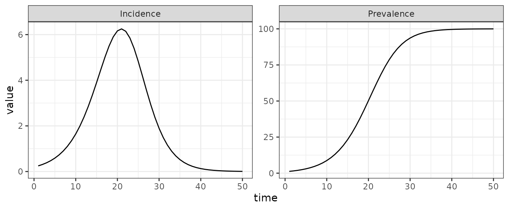
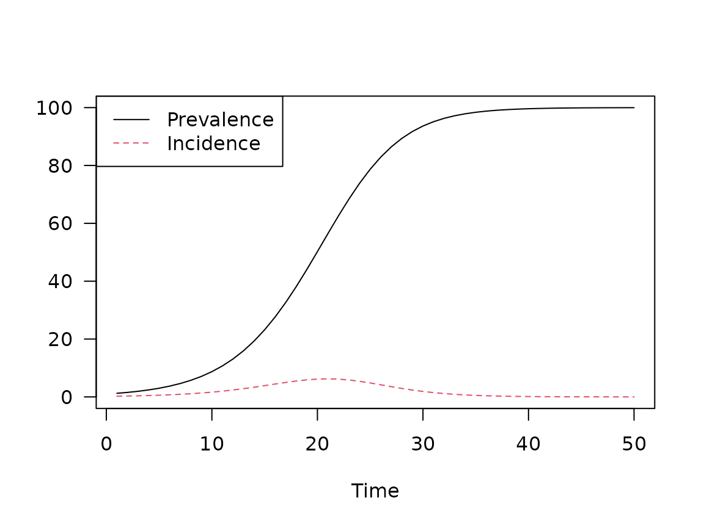

Hello World
The following code specifies an SI model, which is I think is the simplest possible model of epidemiological transmission.
si = mp_tmb_model_spec(
before = list(
I ~ 1
, S ~ N - I
)
, during = list(
infection_rate ~ beta * S * I / N
, S ~ S - infection_rate
, I ~ I + infection_rate
)
, default = list(N = 100, beta = 0.25)
)
print(si)## ---------------------
## Default values:
## ---------------------
## matrix row col value
## N 100.00
## beta 0.25
##
## ---------------------
## Before the simulation loop (t = 0):
## ---------------------
## 1: I ~ 1
## 2: S ~ N - I
##
## ---------------------
## At every iteration of the simulation loop (t = 1 to T):
## ---------------------
## 1: infection_rate ~ beta * S * I/N
## 2: S ~ S - infection_rate
## 3: I ~ I + infection_rateSimulating from this model requires choosing the number of time-steps
to run and the model outputs to generate. Syntax for simulating
macpan2 models is designed to combine with standard data
prep and plotting tools in R, as we demonstrate with the following
code.
(si
## macpan2
|> mp_simulator(
time_steps = 50
, outputs = c("I", "infection_rate")
)
|> mp_trajectory()
## dplyr
|> mutate(quantity = case_match(matrix
, "I" ~ "Prevalence"
, "infection_rate" ~ "Incidence"
))
## ggplot2
|> ggplot()
+ geom_line(aes(time, value))
+ facet_wrap(~ quantity, scales = "free")
+ theme_bw()
)
(Above, we used the base
R pipe operator, |>.)
The remainder of this article looks at each step required to create this plot in more detail, and discusses alternative approaches.
Creating a Simulator
The first step is to produce a simulator object, which can be used to
generate simulation results. This object can be produced using the
mp_simulator function, which takes the following
arguments.
-
model: A model specification object, such assi. -
time_steps: How many time steps should the epidemic simulator run for? -
outputs: The model variables to return in simulation output. -
default(optional) : Allows one to update the default parameter values and initial conditions provided in the model specification (see the argumentdefaultabove in themp_tmb_model_specfunction). Any variables that are not specified indefaultwill be left at the values in the specification.
si_simulator = mp_simulator(
model = si
, time_steps = 50
, outputs = c("I", "infection_rate")
)
si_simulator## ---------------------
## Before the simulation loop (t = 0):
## ---------------------
## 1: I ~ 1
## 2: S ~ N - I
##
## ---------------------
## At every iteration of the simulation loop (t = 1 to 50):
## ---------------------
## 1: infection_rate ~ beta * S * I/N
## 2: S ~ S - infection_rate
## 3: I ~ I + infection_rateThis si_simulator object contains all of the information
required to generate model simulations of I and
infection_rate over 50 time steps, without actually
generating the simulations. This more interesting step of simulation is
covered in the next section. But
before moving on we explain why we separate the step of creating a
simulator from the step of running simulations.
The reason for two steps is to optimize performance in more computationally challenging applications of the software than those covered in this article. The step of creating the simulator object is more computationally intensive than the next step of actually generating the simulations. Therefore this separation is useful when a single simulator can be used to repeatedly generate many different simulations. Three common examples requiring repeated simulations from the same simulator are:
- for models with stochasticity so that the output is different for each run,
- for calibrating model parameters to data using iterative optimization tools,
- and for running different scenarios by updating certain parameters before simulation.
Because macpan2 is primarily developed for such
computationally challenging iterative simulation problems, we believe
that it is better to introduce these two steps as distinct from the very
beginning. Although two steps might seem unnecessarily complex within
the context of this article, keeping them separate will make life easier
when working with more realistic workflows and models.
Generating Simulations
Now that we have a simulation engine object,
si_simulator, we use it to generate simulation results
using the mp_trajectory function. The results come out in
long (or
“narrow”) format, where there is exactly one value per row:
si_results = mp_trajectory(si_simulator)
si_results |> head(8)## matrix time row col value
## 1 I 1 0 0 1.2475000
## 2 infection_rate 1 0 0 0.2475000
## 3 I 2 0 0 1.5554844
## 4 infection_rate 2 0 0 0.3079844
## 5 I 3 0 0 1.9383066
## 6 infection_rate 3 0 0 0.3828223
## 7 I 4 0 0 2.4134907
## 8 infection_rate 4 0 0 0.4751841The simulation results are output as a data frame with the following columns:
-
matrix: Which matrix does a value come from? All variables are represented as matrices, although in this article we only consider 1-by-1 matrices. -
time: The time index from1totime_steps. -
row,col: Placeholders for variable components in more complicated structured models (not covered in this article, but useful for example when S and I in different age groups or geographic locations are tracked separately). -
value: The simulated value for a particular state and time step.
Processing Results
macpan2 does not provide any data manipulation or
plotting tools (although there are a few in
macpan2helpers). The philosophy is to focus on the engine
and modelling interface, but to provide outputs in formats that are easy
to use with other data processing packages, like ggplot2,
dplyr, and tidyr, all of which readily make
use of data in long format.
In the graphs above for example, we required a step that renames the model variables into something that makes more sense for the graphical presentation. Here we reproduce this, but take a little more care to produce a tidier dataset.
si_results = (si_results
|> mutate(matrix = case_match(matrix
, "I" ~ "Prevalence"
, "infection_rate" ~ "Incidence"
))
|> rename(quantity = matrix)
|> select(time, quantity, value)
)
print(head(si_results, 8L))## time quantity value
## 1 1 Prevalence 1.2475000
## 2 1 Incidence 0.2475000
## 3 2 Prevalence 1.5554844
## 4 2 Incidence 0.3079844
## 5 3 Prevalence 1.9383066
## 6 3 Incidence 0.3828223
## 7 4 Prevalence 2.4134907
## 8 4 Incidence 0.4751841Here we rename the I state variable as the disease
prevalence (number of currently infected individuals). Because this is a
discrete-time model, we can reinterpret the infection_rate
as the incidence (number of newly infected individuals) over one time
step. Note that this approach to calculating incidence only works if the
time period over which incidence is measured corresponds to the length
of one time step. If this assumption is not met – for example if the
time step is one day but incidence data are reported every week – then
other approaches to computing incidence that are not covered here must
be taken.
We can generate a ggplot from this dataset as we did
above. If you want to use base R plots, you can convert the long format
data to wide format:
si_results_wide <- (si_results
|> tidyr::pivot_wider(
, id_cols = time
, names_from = quantity
)
|> rename(Time = time)
)
head(si_results_wide, n = 3)## # A tibble: 3 × 3
## Time Prevalence Incidence
## <int> <dbl> <dbl>
## 1 1 1.25 0.248
## 2 2 1.56 0.308
## 3 3 1.94 0.383or
par(las = 1) ## horizontal y-axis ticks
matplot(
si_results_wide[, 1]
, si_results_wide[,-1]
, type = "l"
, xlab = "Time", ylab = ""
)
legend("topleft", col = 1:3, lty = 1:3, legend = c("Prevalence", "Incidence"))